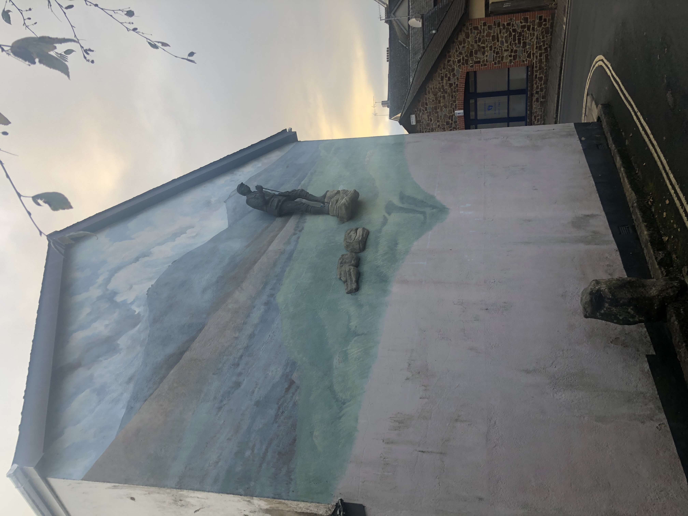

To View any paintings in more detail please
click on each painting in turn.
Exhibitions
Current Exhibition

Domaine Uma, France
Mary-Anne's work is currently exhibited at the beautiful Domaine Uma winery in the Pic St Loup region of France.

Okehampton, Devon
Mary-Anne's gallery/studio in Devon is now open for viewing by appointment only.
Past Exhibitions
2019
Terres Des Cambon, Chateau en Pic St Loup, Valfiquines, France
2018
Solo Exhibition at Melbourne Arts Festival, Australia
2017
Group Exhibition at London Contemporary Art Fair
2016
Bahrain National Museum Art Show


×